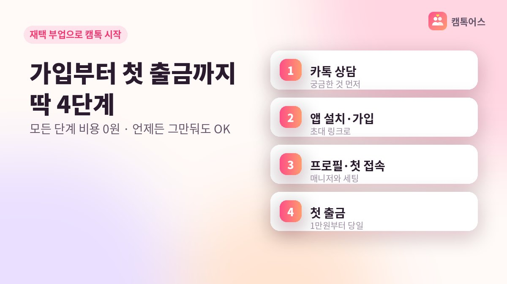
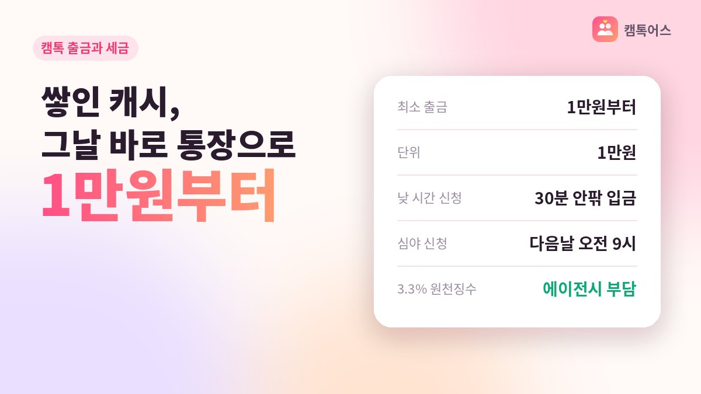
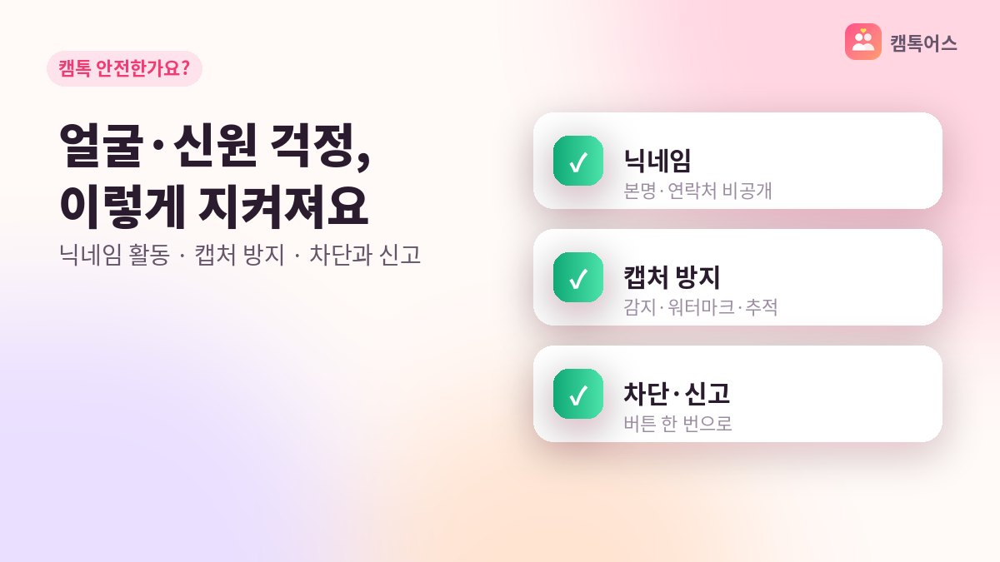
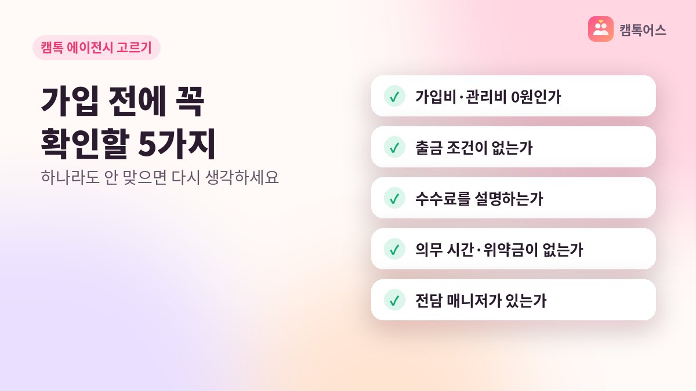
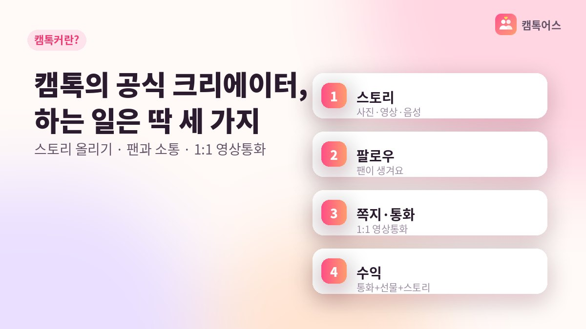

캠톡어스 게시판
캠톡과 캠톡커,
캠톡과 캠톡커,
궁금한 걸 차근차근 풀어드려요
처음 접하는 분들이 많이 묻는 것들을 글로 정리했어요. 읽다가 궁금한 게 생기면 언제든 카톡으로 물어보세요.
-

재택 부업으로 캠톡 시작하기, 가입부터 첫 출금까지
재택 부업으로 캠톡 시작하는 4단계. 캠톡어스 초대 링크 가입, 프로필·스토리 준비, 첫 영상통화, 1만원부터 첫 출금까지 순서대로 안내합니다.
읽어보기 → -

캠톡 출금 방법과 세금, 1만원부터 당일 출금
캠톡 출금은 1만원부터 1만원 단위, 낮 시간 신청은 30분 안팎 입금. 3.3% 원천징수와 송금 수수료는 에이전시 부담, 종합소득세 신고까지 캠톡 세금 정리.
읽어보기 → -

캠톡 안전한가요? 익명·캡처 방지·차단 기능 정리
캠톡 안전 기능 총정리. 닉네임 익명 활동, 캡처 감지·워터마크, 차단·신고, 6중 보안, 마스크 활동까지 캠톡커가 알아둘 보호 장치를 설명합니다.
읽어보기 → -

캠톡 에이전시 고르는 법, 가입 전 확인할 5가지
캠톡 에이전시 선택 기준 5가지. 공식 에이전시 여부, 비용 0원, 의무 시간·위약금, 세금·수수료 부담, 전담 매니저까지 캠톡 소속 전에 꼭 확인하세요.
읽어보기 → -
캠톡 수익, 1분 900원이 한 달에 얼마가 될까
캠톡 수익은 영상통화 1분당 900캐시. 하루 30분·1시간·주말 집중 등 시간대별 계산 예시로 캠톡 부업 한 달 금액을 현실적으로 짚어봅니다.
읽어보기 → -

캠톡커란? 캠톡 크리에이터가 하는 일과 수익 구조 총정리
캠톡커(캠톡 크리에이터)가 하는 일과 스토리·팔로우·영상통화 구조, 1분 900캐시 수익, 공식 에이전시 가입 조건까지 처음 보는 분 기준으로 정리했습니다.
읽어보기 →